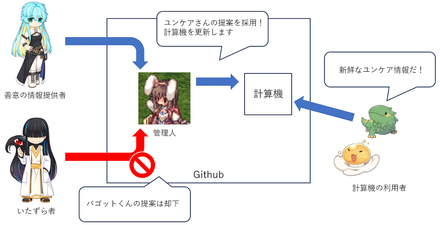

このWebサイトについて
この Web サイトは「ROラトリオ避難所」の一時お休みを受けて立ち上げた
ROラトリオ避難所の避難所です。
ROラトリオ避難所の計算機のソースコードをそのままコピーした上で、
2023年12月以降のアイテムなどのデータを可能な範囲で追加しています。
ソースコードの再利用/公開を許可してくださったROラトリオ避難所様には
この場を借りて改めてお礼申し上げます。
管理について
この Web サイトは Github Pages でホストされており、
私 (usachoco) が Github のリポジトリを更新することで
Webサイトも更新されるようになっています。
当面の間、リポジトリの更新権限は私だけが持ちますので、
知らない間に誰かがいたずらをするようなことは有りません。
現在、何名かの方が開発に参加してくれていますが、
私の責任において Web サイトを管理、更新していきます。
更新のお手伝いについて
更新権限は私だけしか持っていませんが、Webサイトのソースを閲覧し、
更新内容を提案することは誰でも出来るようになっています。
Github のアカウントを持っている方はお気軽に Issue や Pull Request をお寄せください。
私がレビューして問題ないと判断したものはWebサイトに反映していきます。

例えば以下のような情報をお寄せ頂けると助かります。
- この職業がLvいくつのとき、HP/SPの値はこうだったよ
- 計算機で算出されたダメージはこうだったけど、実際のダメージはこうだったよ
- 計算機のアイテムデータが間違っているのを発見したよ
- 新しいアイテムデータの配列を作っておいたよ
- 現計算機の様々な制約を取り払う改善を提案するよ
Github のアカウントを持っていない方は連絡先まで情報をお寄せください。
連絡先
Discord "ROratorio Contributers"
Githubのアカウントを作るのは気が進まないけどDiscordからだったら意見を出してみたい！
という方向け
Googleフォーム
匿名投稿したい方向け
ただ、投稿していただいた情報や文章を
開発の情報共有のためGithubなどに掲載させていただく事がございます
非公開にしてほしい場合はその旨を記載ください
RO丼
Twitter/X
権利について
このWebサイトの計算機はROラトリオならびにROラトリオ避難所が作成したソースコードに
私達が手を加えたものであり、これを利用する場合はライセンスの内容に同意したものと見なされます。
また、このWebサイトの計算機はラグナロクオンラインの情報を取り扱うため、
「ラグナロクオンライン」著作物利用ガイドラインの利用許諾事項に従い以下を表示します。
© Gravity Co., Ltd. & Lee MyoungJin(studio DTDS). All rights reserved.
© GungHo Online Entertainment, Inc. All Rights Reserved.
当コンテンツの再利用（再転載・配布など）は、禁止しています。